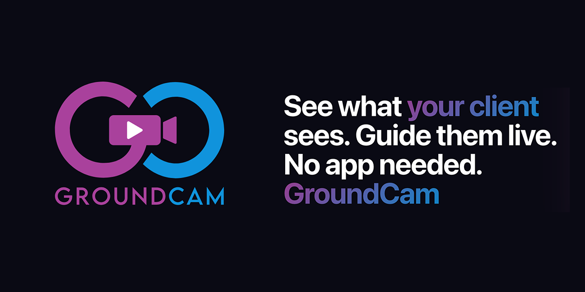
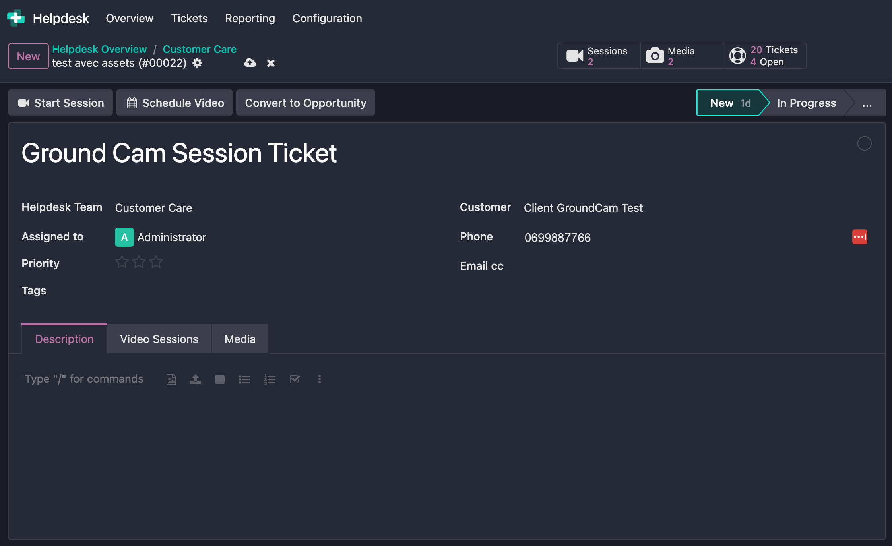
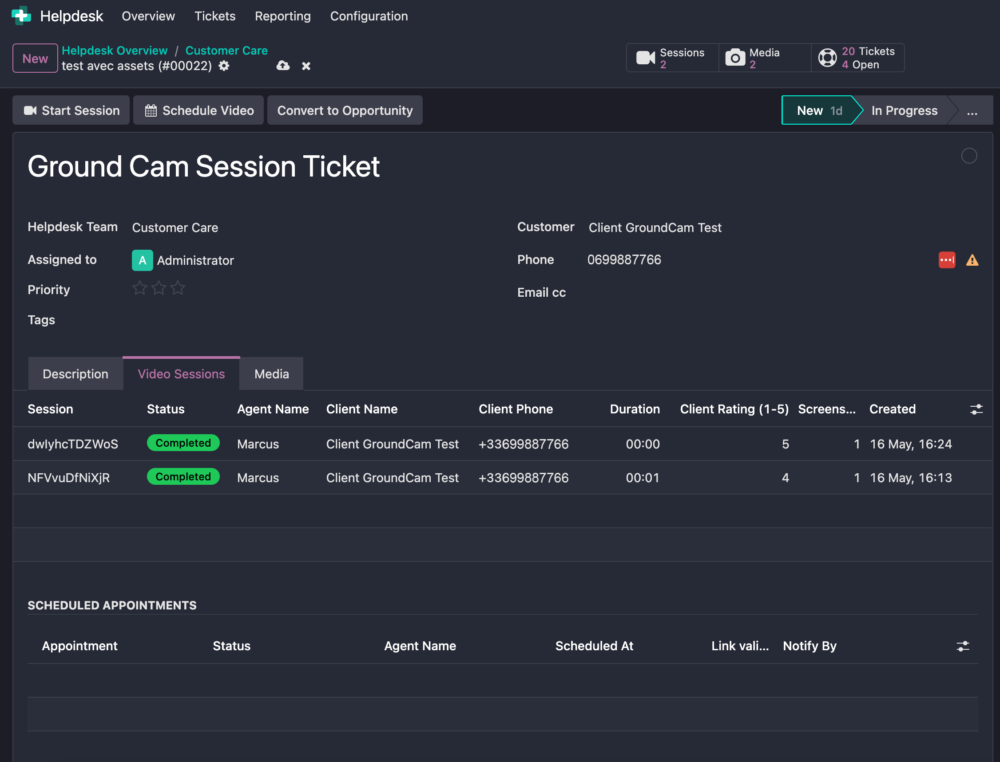
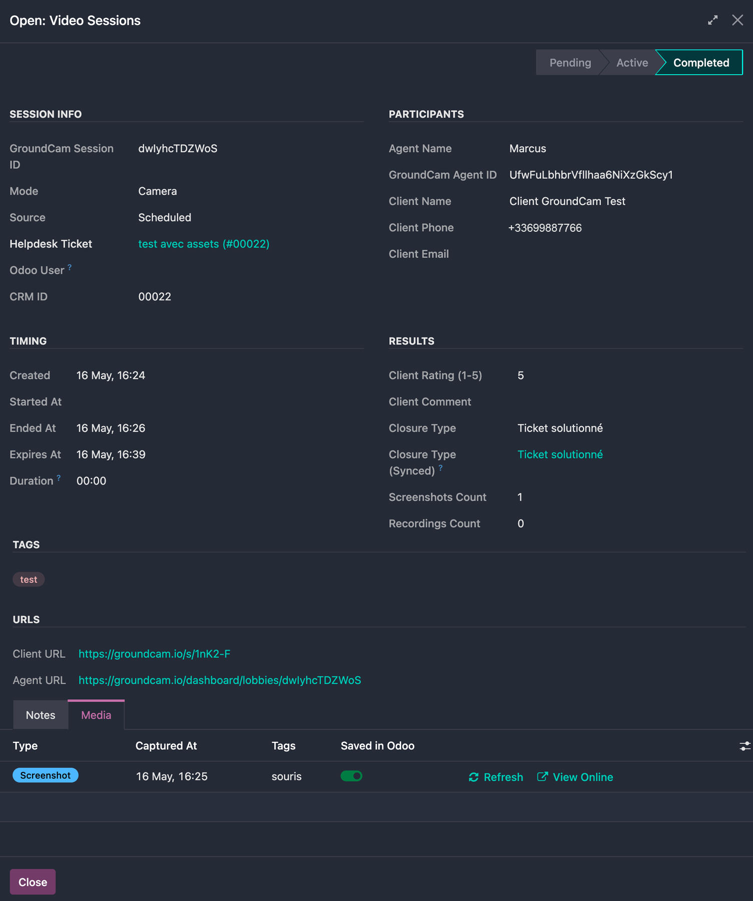
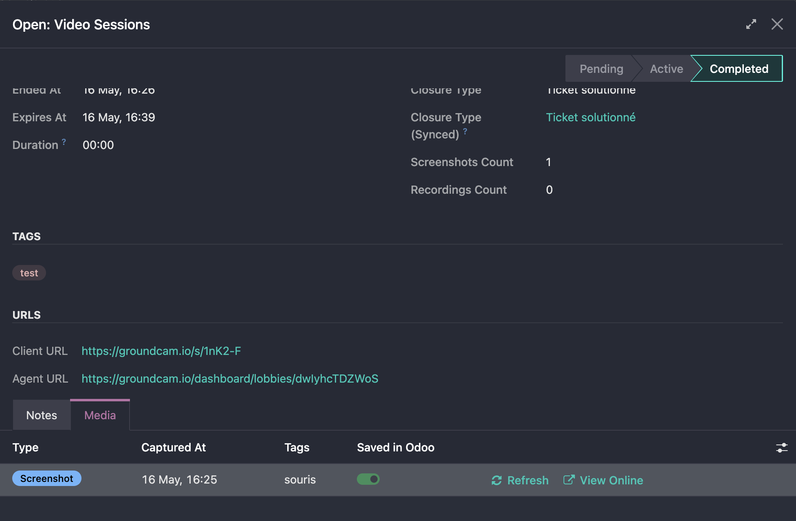
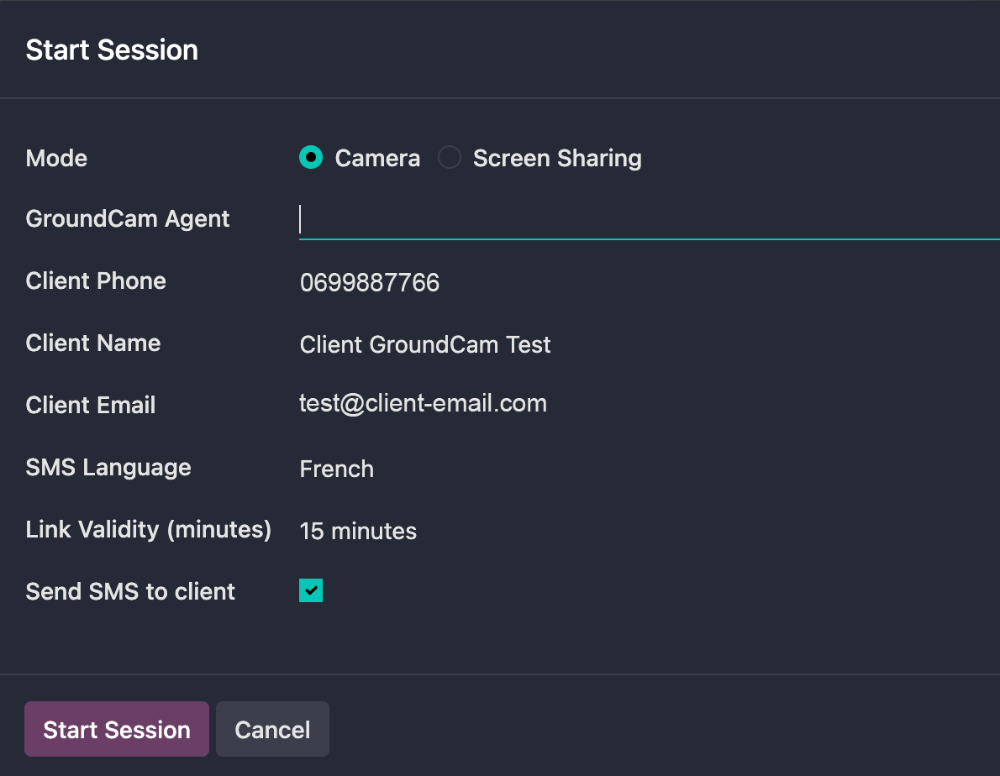
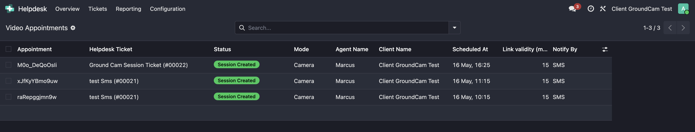
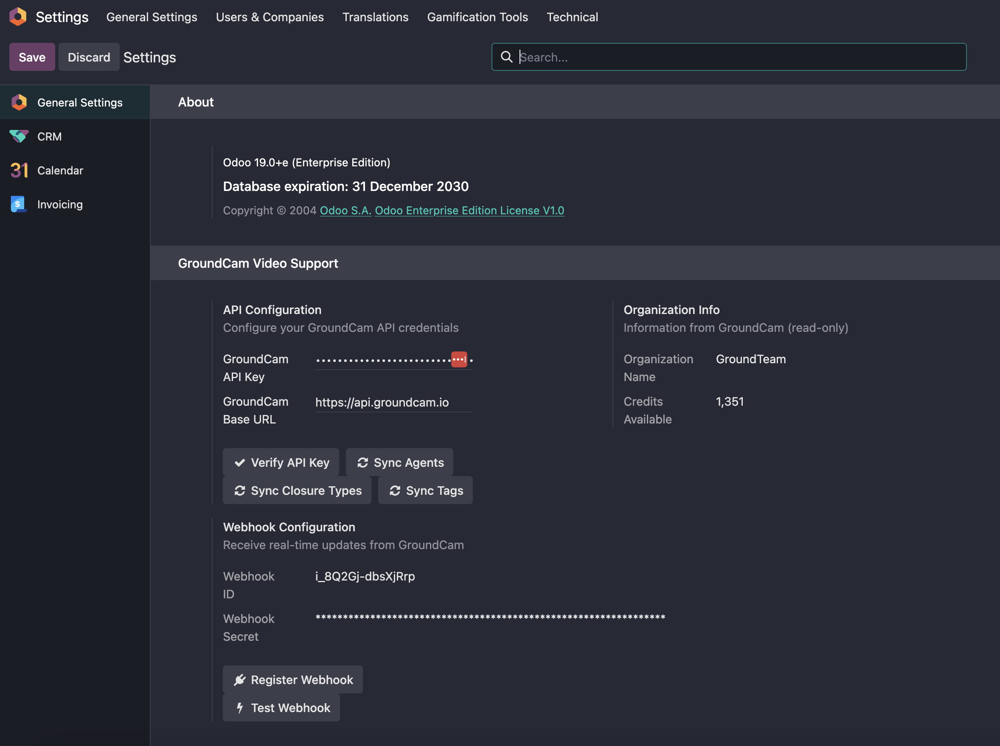

GroundCam lets a support agent run a live video session with a customer without asking the customer to install anything. The customer simply receives an SMS or an email with a link, opens it, and the session starts in their browser.
This module brings GroundCam into Odoo 19 Helpdesk: agents start, schedule and follow up on video sessions directly from the ticket they are working on. Screenshots and recordings flow back into Odoo automatically so the whole conversation stays in one place.
Launch a Camera or Screen Sharing session from any helpdesk ticket. The client receives a single-use link, the agent gets an authenticated URL — both in two clicks.
Book a video session for later with the appointment wizard. GroundCam sends the reminder, creates the session at the scheduled time, and updates the ticket automatically.
Every screenshot and recording is referenced inside Odoo. View online in one click, or save permanently as an attachment on the helpdesk ticket.
Session status, client ratings, appointment updates, screenshot edits and deletions are pushed back to Odoo via signed webhooks — deduplicated by delivery ID.
Invitations and reminders are sent to the customer in English, French, German, Spanish, Italian or Portuguese — picked per session, not global.
Incremental sync every 5 minutes catches any missed webhook delivery. Daily cleanup keeps the webhook log lean. Per-team activation keeps the UI focused.







Paste your GroundCam API key, sync agents, register the webhook, enable GroundCam on the teams that need it.
Open a ticket, click Start Session or Schedule Video. The customer receives the link by SMS or email.
During the session, take screenshots, record video, draw on the live feed, exchange chat messages.
Media flows back into Odoo. Save the ones you want as ticket attachments. The ticket chatter logs everything.
gc_live_ and is shown only once.helpdesk, phone_validation, busrequests, phonenumbersUI translated in French, German, Spanish, Italian, Portuguese. Customer SMS and email notifications additionally support English (default fallback).
This module is licensed under LGPL-3.
Write to support@groundcam.io.